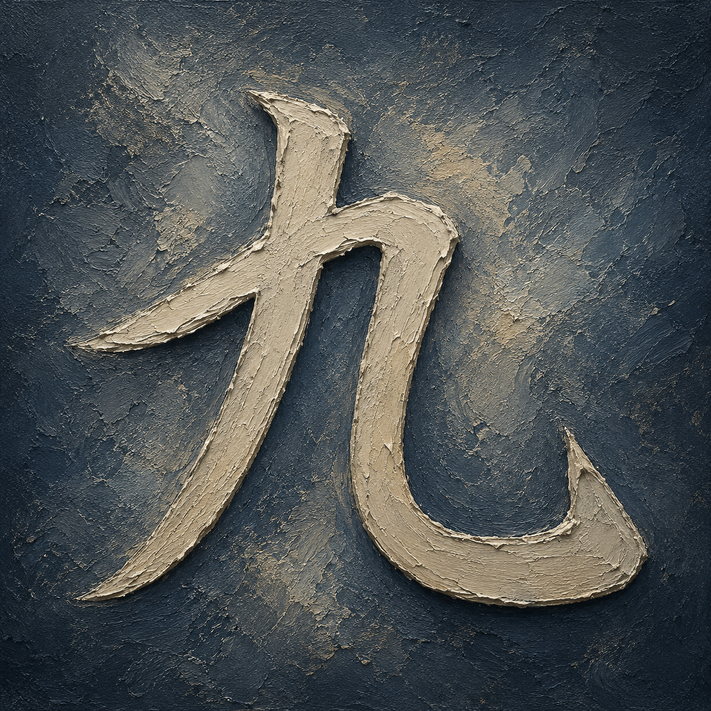

つくえ。
tsukue.
Beginner pathway
Look into the picture.
Look
Look into the scene.
つくえ。
tsukue.
つ く え
tsu ku e
つ and え you already have. く is new.

つくえの うえ。
tsukue no ue.
く joins because つくえ needed it. 26 of 46 is not unfinished work.
You have stood in front of this before.
Look again.

濡れた橋に
灯りが続く
You can already see some of it.